coleam00/context-engineering-intro: vibe coding test
Installed from its README in a throwaway sandbox, then used by Claude Code (Claude Opus 5.5) to build two apps from requests written the way someone who cannot code would write them. Whenever the build stopped to ask a question or for approval, it got the same reply. A separate tester session, with no tool loaded, opened each app in a browser and ran the checks; we went through every screenshot. All results · The task · The tester's checks
Install: SETUP: done Context Engineering template (project commands /generate-prp and /execute-prp, CLAUDE.md rules, PRP templates) copied into ~/work via `cp -r ~/src/{.claude,PRPs,examples,CLAUDE.md,INITIAL.md,INITIAL_EXAMPLE.md,.gitignore} ~/work/` (repo commit a2d84b021cee)
One sentence: an expense page
The request, word for word: 帮我做一个记账小网页：每次花钱记一笔（花了多少、买了什么），页面上能看到一共花了多少，关掉浏览器再打开，记录还在。
Ran: all 4 checks passed. Opens: double-click. The command: python3 output/server.py.
Built in 29.7 minutes (limit 30); it stopped to ask 0 time(s); how it ended: finished.
Usage at API prices: $2.06 (12.1 times the run with no tool). Packages: none (plain HTML, CSS and JavaScript).
Our note: Its own browser checks saw records lost on a local file, so it added a small local server (START.txt) and a banner on the page warning against opening it by double-click. That took most of its 29.7 minutes. The page opened by double-click still passed every check.
| Check | Verdict | What the tester saw | Screenshot |
|---|---|---|---|
| opens | pass | Page shows: 记账小本 | 你是直接双击打开的这个文件，浏览器可能不会可靠地保存记录。 请用启动命令打开（见 START.txt），地址应是 http://127.0.0.1:8765/ | 一共花了 | ¥0.00 | 共 0 笔 | 花了多少（元） | 买了什么 | 记一笔 | 记录 | 还没有记录，花钱后记一笔吧 | 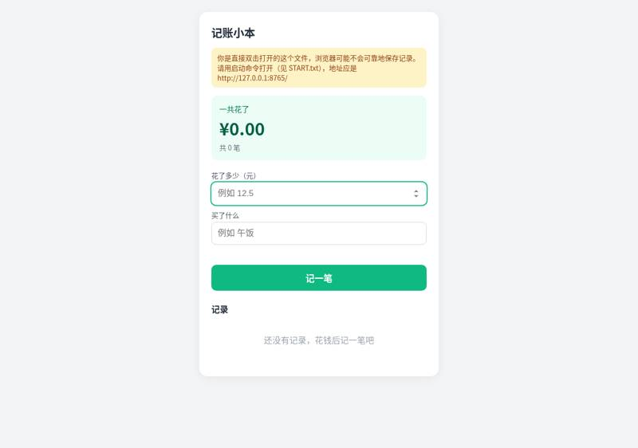 |
| records an expense | pass | After adding 25/午饭 page shows: 记账小本 | 一共花了 | ¥25.00 | 共 1 笔 | 花了多少（元） | 买了什么 | 记一笔 | 记录 | 午饭 | 2026-10-26 20:09 | ¥25.00 | 删除 | 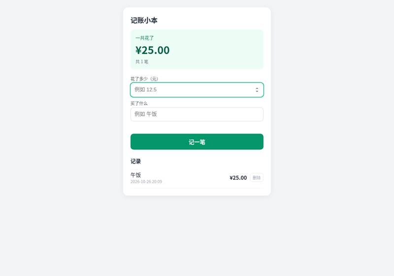 |
| total is right | pass | Total shown: ¥41.50. Page: 记账小本 | 一共花了 | ¥41.50 | 共 3 笔 | 花了多少（元） | 买了什么 | 记一笔 | 记录 | 地铁 | 2026-10-26 20:09 | ¥4.00 | 删除 | 咖啡 | 2026-10-26 20:09 | ¥12.50 | 删除 | 午饭 | 2026-10-26 20:09 | ¥25.00 | 删除 | 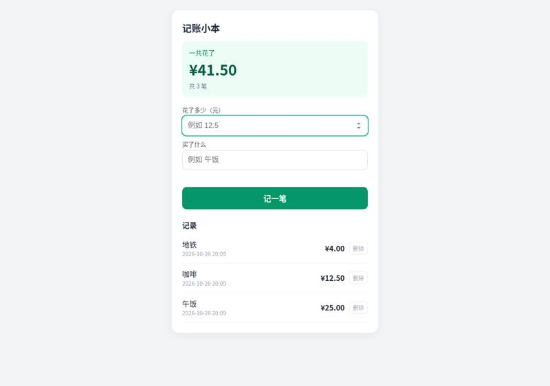 |
| still there after closing and reopening | pass | After reopen total: ¥41.50, all three items present: True. Page: 记账小本 | 一共花了 | ¥41.50 | 共 3 笔 | 花了多少（元） | 买了什么 | 记一笔 | 记录 | 地铁 | 2026-10-26 20:09 | ¥4.00 | 删除 | 咖啡 | 2026-10-26 20:09 | ¥12.50 | 删除 | 午饭 | 2026-10-26 20:09 | ¥25.00 | 删除 | 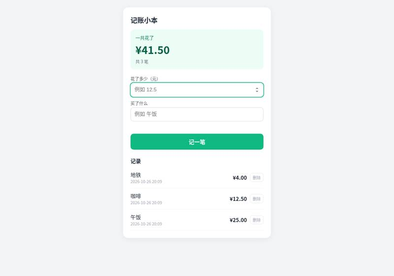 |


Where it stopped, and got the reply 「我不懂这些，你按你推荐的来，继续做。」
- It did not stop to ask.
One paragraph: a family ledger
The request, word for word: 做一个家庭记账本网页：能记收入和支出（金额、类别、日期、备注），能按月看收入、支出和结余，能看每个类别花了多少（最好有图），可以设每月预算、超了要提醒，还能把记录导出成 Excel 表格。数据存在我电脑上就行。
Ran: all 8 checks passed. Opens: one command first. The command: bash output/start.sh.
Built in 9.4 minutes (limit 45); it stopped to ask 0 time(s); how it ended: finished.
Usage at API prices: $2.37 (2.3 times the run with no tool). Packages: none (plain HTML, CSS and JavaScript).
Our note: Built as a small project with a start script: there is no index.html to double-click, so a person has to run bash output/start.sh first.
| Check | Verdict | What the tester saw | Screenshot |
|---|---|---|---|
| opens | pass | page shows 家庭记账本 with 记一笔 form, budget, summary, charts: 家庭记账本 ◀ ▶ 本月 导出本月 Excel 导出全部 Excel 记一笔 支出 收入 金额（元） 类别 餐饮 买菜 交通 购物 住房 水电煤 通讯 医疗 教 | 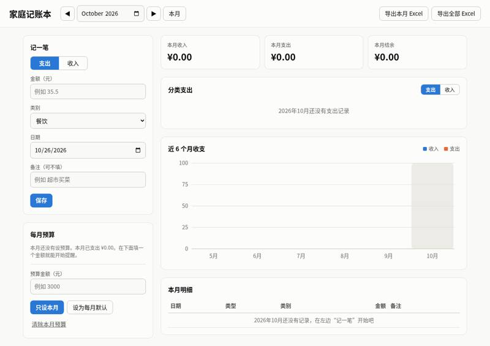 |
| records income and expenses | pass | categories used ['工资', '餐饮', '交通', '餐饮']; table rows: 日期 类型 类别 金额 备注 | 2026-10-12 支出 餐饮 −¥80.00 晚饭 编辑删除 | 2026-10-08 支出 交通 −¥30.00 地铁 编辑删除 | 2026-10-05 支出 餐饮 −¥120.00 午饭 编辑删除 | 2026-10-01 收入 工资 +¥5,000.00 十月工资 编辑删除 | 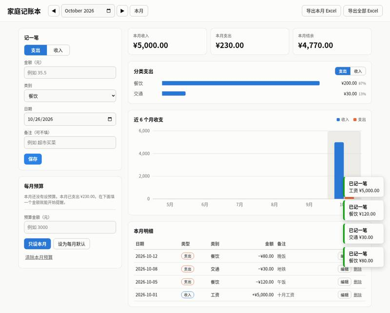 |
| month's income, spending and balance | pass | October 2026 summary: 收入 5000.0, 支出 230.0, 结余 4770.0 (month field 2026-10) | |
| spending by category | pass | 分类支出 section text: 本月收入 ¥5,000.00 本月支出 ¥230.00 本月结余 ¥4,770.00 分类支出 支出 收入 餐饮 ¥200.0087% 交通 ¥30.0013% 近 6 个月收支 收入 支出 0 2,000 4,000 6,000 5月 6月 7月 8月 9月 10月 本月明细 日期 类型 类别 金额 备注 2026-10-12 支出 餐饮 −¥80.00 晚饭 编辑删除 2026-10-08 支出 交通 −¥30.00 地铁 编辑删除 2026-10-05 支出 餐饮 −¥120.00 午饭 编辑删除 2026-10-01 收入 工资 +¥5,000.00 十月工资 编辑删除 | 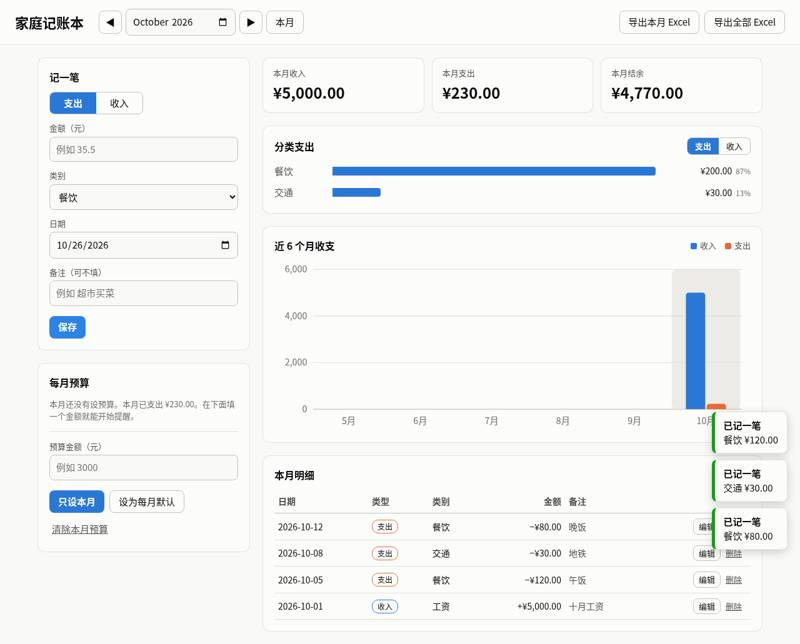 |
| switches between months | pass | September 2026: table '日期 类型 类别 金额 备注 | 2026-09-15 支出 购物 −¥999.00 编辑删除', 收入 0.0 支出 999.0 结余 -999.0; back to October: 收入 5000.0 支出 230.0 结余 4770.0 | 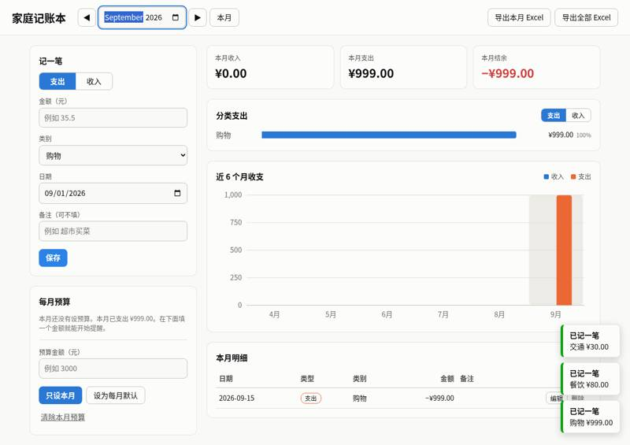 |
| warns over budget | pass | set 只设本月 200 for October; budget box: 记一笔 支出 收入 金额（元） 类别 餐饮 买菜 交通 购物 住房 水电煤 通讯 医疗 教育 娱乐 人情 其他 自定义… 日期 备注（可不填） 保存 每月预算 预算 ¥200.00 已用 ¥230.00 剩余 −¥30.00 ⛔ 已超出预算（已用 115%） 本月单独设置的预算 预算金额（元） 只设本月 设为每月默认 清除本月预算 | 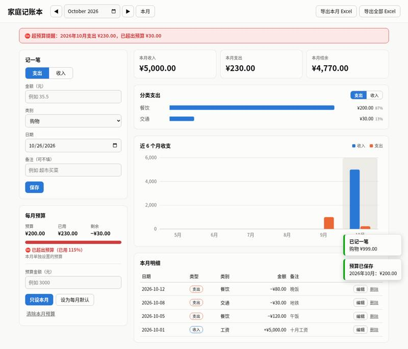 |
| exports a spreadsheet | pass | clicked 导出全部 Excel -> 记账本_全部.xlsx (.xlsx); amounts found {'5000': True, '120': True, '30': True, '80': True, '999': True}; rows: ('日期', '类型', '类别', '金额(元)', '备注'); (datetime.datetime(2026, 9, 15, 0, 0), '支出', '购物', 999, None); (datetime.datetime(2026, 10, 1, 0, 0), '收入', '工资', 5000, '十月工资'); (datetime.datetime(2026, 10, 5, 0, 0), '支出', '餐饮', 120, '午饭'); (datetime.datetime(2026, 10, 8, 0, 0), '支出', '交通', 30, '地铁'); (datetime.datetime(2026, 10, 12, 0, 0), '支出', '餐饮', 80, '晚饭'); ('月份', '收入(元)', '支出(元)', '结余(元)'); ('2026-09', 0, 999, -999); ('2026-10', 5000, 230, 4770); ('合计', 5000, 1229, 3771) | 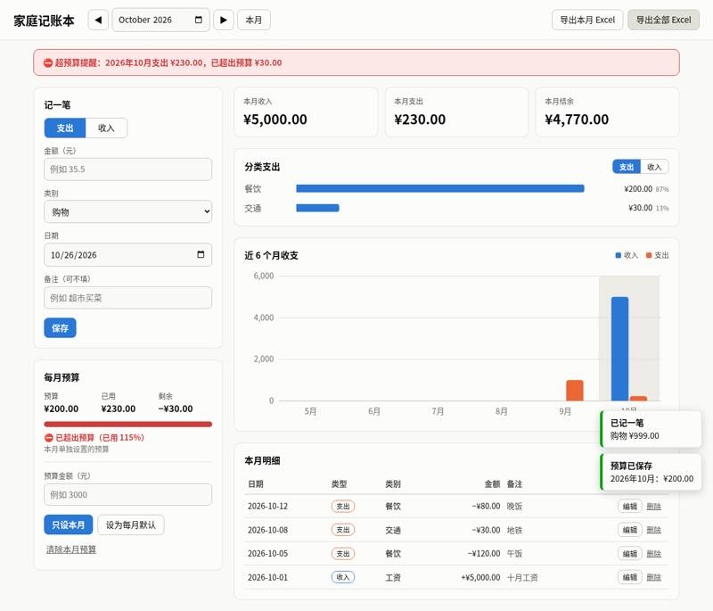 |
| still there after closing and reopening | pass | after restart October: 收入 5000.0 支出 230.0 结余 4770.0; October table: 日期 类型 类别 金额 备注 | 2026-10-12 支出 餐饮 −¥80.00 晚饭 编辑删除 | 2026-10-08 支出 交通 −¥30.00 地铁 编辑删除 | 2026-10-05 支出 餐饮 −¥120.00 午饭 编辑删除 | 2026-10-01 收入 工资 +¥5,000.00 十月工资 编辑删除; September table: 日期 类型 类别 金额 备注 | 2026-09-15 支出 购物 −¥999.00 编辑删除 | 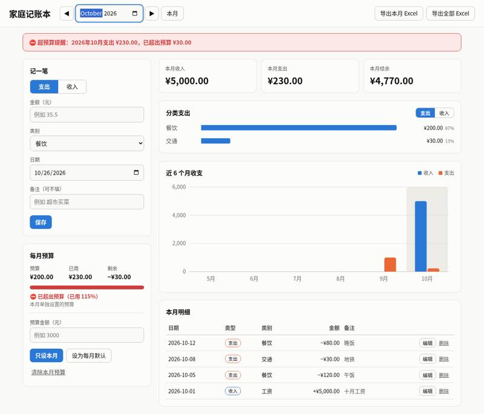 |


Where it stopped, and got the reply 「我不懂这些，你按你推荐的来，继续做。」
- It did not stop to ask.